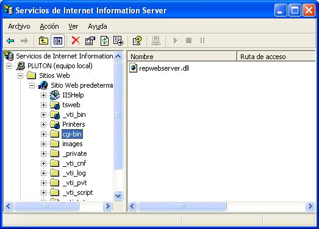
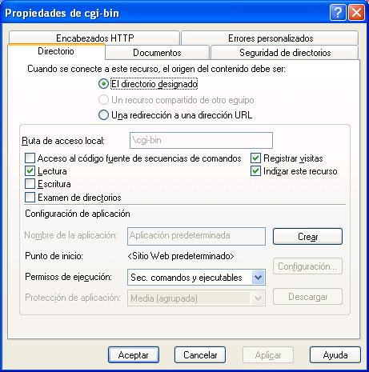

Installing Report Manager web server in Microsoft IIS 5
Usually you copy the application (rpwebserver.dll) into a directory with privileges to execute binary files.
Open the Internet Information Services administration tool, create a directory (cgi-bin) and alter properties to allow executing applications.


You can test the installation by calling the application with /version command:
http://localhost/cgi-bin/repwebserver.dll/version
This will give you info about the configuration file the report web server is using.
For security reasons you can't add/remove users or aliases from the web. To configure users and aliases you can use repserverapp(xp) and repserverconfig(xp), execute repserverapp as a privileged user (root or Admin) so it opens the system wide configuration file and have write permissions over it, then execute repserverconfig(xp) and add aliases and users. You can see the generated file location in reportserverapp form, this configuration file will be used by the web report server.
http://localhost/cgi-bin/repwebserver.dll/login
Installing Report Manager web server in Linux Apache
Usually you copy the application (rpwebexe.bin and repwebexe) into a directory with execution privileges, in Suse 7.3, is /usr/local/httpd/cgi-bin.
You must place the configuration file of the server in /etc/reportmanserver file. You can generate it with the tcp server application and the tcp server configuration.
This file will contain user information (default user Admin with blank password) and the report directories. A simple file can be:
[ALIASES]
SAMPLE=/var/reports
User running apache process must have read privileges of this directory.
The database configuration files must be placed in directory /usr/local/etc, this files are:
dbxconnections.conf, dbxdrivers.conf
There information about database location, user names and passwords are stored, if you use the designer application (repmand) it usually reads and writes this configuration files to /home/username/.borland directory, you can copy the files from there to the correct directory.
Finally the report server application must link to required libraries, you should place this libs (provided with the report designer) in /opt/kylixlibs directory, because repwebexe.bin application launcher add this directory to the path, otherwise you can add other directory to /etc/ld.so.conf file and run ldconfig command.
To test the server you can write:
http://localhost/cgi-bin/repwebexe.bin/version
It will say you the version and the configuration file location, then you can test the configured reports:
http://localhost/cgi-bin/repwebexe.bin/login